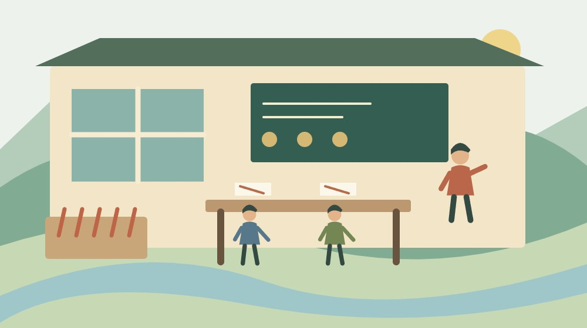
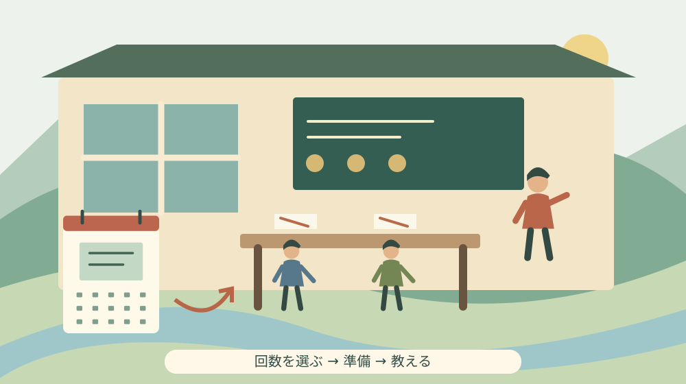

森の夢づくり大学の教授募集｜続けられる講座設計

Q. 森の夢づくり大学で教えたいけれど、年間どのくらいの負担になる？
令和9年度の講座は2027年6月〜2028年3月、年5・10・20回から選び、1回約2時間です。学生5人以上で開講し、受講料が教授の謝金になります。応募期限は2026年11月18日、窓口17時・電子申請23時59分。今日は準備と移動も含めて続けられる回数を一つ選びます。
教える2時間の前後にある仕事を数える
人に教える活動には、道具をそろえ、伝える順序を考え、会場へ運ぶ仕事があります。受講者が帰った後も片付けが残ります。森町の学ぶ場を支えてきた講師の方々の負担を、授業の2時間だけで測ることはできません。趣味や仕事で磨いた技術を分け合うには、その前後の時間を確保する必要があります。
大石浩之（磐田市／不動産業）です。私は、教えたい気持ちを年間20回の約束へ急いで変える必要はないと考えます。仕事、家族の用事、移動を重ねても続く回数を選ぶ。それが、教える人にも学ぶ人にも誠実な入口です。今回は教授募集を、年間の予定と謝金から読みます。
森町教育委員会社会教育課の募集ページは、2026年10月2日更新です。令和9年度の教授募集について、2026年10月3日に本文を確認しました。申込みをする年は2026年、講座が始まる年は2027年です。日付を手帳へ移すとき、この二つを同じ年にしないようにしてください。
この記事は学生の受講申込みの案内ではありません。講座を開きたい人が、教える内容と年間の負担を整理するための記事です。教授への応募を済ませた段階で開講が決まるわけでもありません。学生募集後の条件を含めて、講座を準備する順番を確認します。
公式情報で分かる開講条件と応募期限
森町の「令和9年度森の夢づくり大学教授募集について」は、教養・芸術・健康などの分野で25名の教授、約360人の学生を紹介しています。これは掲載本文の紹介人数です。令和9年度の採用枠が25名という意味ではなく、応募した講座へ約360人が振り分けられるという意味でもありません。
開講条件は、4月の学生募集で申込者が5人以上になることです。講座は2027年6月から2028年3月まで、年間5回、10回、20回のいずれかで設定します。1回当たりは2時間程度です。5人という数字は開講の下限であり、道具や会場に応じた講座の定員を示す数字ではありません。
応募は電子申請、または講座開設計画書の窓口提出です。2026年11月18日（水）が提出期限で、窓口は17時、電子申請は23時59分までと案内されています。期限後の申込みは受け付けないと明記されています。同じ締切日でも終了時刻が異なるため、利用する方法を決めて記録します。
窓口の提出先は、森町森1485の森町文化会館内、森町教育委員会社会教育課です。受付は土日祝を除く9時〜17時、電話は0538-85-1112です。10月3日は土曜日なので、窓口へ書類を届ける予定にはできません。今日は計画を整理し、提出は受付日と分けて考えられます。
営利目的ではない生涯学習講座であることも、募集ページに記されています。教室を商売として拡大する計画と、地域で楽しみを分ける講座の計画は、収入に対する期待が違います。自分の仕事の経験を教える場合も、まず、この募集の趣旨に合う内容かを確かめる必要があります。
年5回・10回・20回を授業以外の時間へ翻訳する
年間5回なら授業だけで約10時間、10回なら約20時間、20回なら約40時間です。これは公式の回数と1回約2時間を掛けた計算で、準備、移動、設営、片付けは含めていません。手帳へ「講座10時間」とだけ記すと、実際に確保する時間が見えなくなります。
例えば、仮に毎回の準備と往復移動などに合計2時間かかるなら、授業と合わせて1回4時間です。年5回で20時間、10回で40時間、20回で80時間になります。この2時間は町の標準値ではなく、負担を考えるための仮の数字です。自分の内容と出発地に置き換えて計算してください。
初回の教材づくりと、毎回の準備も分けてみます。一度作れば使える説明資料と、毎回買い直す材料では負担の増え方が違います。回数を減らしても最初の資料づくりは残ります。逆に、共通の道具を繰り返し使う内容なら、回数だけで材料費が同じ割合に増えるとは限りません。
私は最初に、得意なことを全部教える計画ではなく、受講者が一つ持ち帰れる計画を描きます。例えば作品づくりなら、基本の扱い、試作、仕上げのように到達点を分ける方法があります。これは講座設計の提案で、町の指定カリキュラムではありません。教え切れる範囲から回数を選びます。
年5回を選ぶことは、熱意が小さいことではありません。介護や仕事の予定が変わる人には、準備に余裕を持てる回数の方が合う場合があります。10回や20回で反復を必要とする内容もあります。回数の大小を優劣にせず、学ぶ内容と講師の生活が両方収まるかで考えます。
謝金は学生数で変わる。経費を引く前の数字を見る
森町の募集案内では、学生1人の年間受講料は5回講座2,500円、10回講座5,000円、20回講座10,000円です。この受講料がそのまま教授への謝金になると説明されています。講座の回数だけで教授の年間受取額が確定する仕組みではなく、学生数も計算に入ります。
仮に学生5人で開講するなら、年間の謝金は順に12,500円、25,000円、50,000円です。いずれも受講料に5人を掛けた額で、交通費や材料費などを差し引く前の計算です。学生数が10人なら金額は変わりますが、人数を増やせば指導と道具の準備も変わる点は別に見ます。
同じ5人の例では、1回当たりの謝金はどの回数設定でも2,500円になります。回数が4倍になる20回講座でも、1回当たりの計算額が4倍になるわけではありません。この点は、年間50,000円という合計だけを見たときに見落としやすい数字です。準備を含めた負担との釣合いを考える材料になります。
この計算を時給や手取り額と呼ぶことはしません。準備に要する時間も、支出も、税の扱いも個別に異なるからです。材料費を別に集められるか、道具を誰が用意するか、謝金をいつ受け取るかは、今回確認した募集本文だけでは分かりません。応募前の質問として社会教育課へ整理して伝えます。
会場使用料は減免すると案内されていますが、現行の募集本文には減免率の記載がありません。全額無料とも、一定の割合とも決めつけず、対象施設、備品、冷暖房などの扱いを確認します。古い募集の数字を翌年度へ持ち越さないことが、講師側の持ち出しを見誤らないための基本になります。
会場までの移動と、片付けまでの予約を考える
森町文化会館の「ご利用案内」は、使用時間に準備、練習、後片付けなど一切の時間を含むと説明しています。講座が2時間でも、会場を使う時間が2時間で足りるとは限りません。この施設の一般案内と夢づくり大学での手配方法を分け、実際の会場調整は社会教育課へ確認してください。
会場選びを考える人には、森町文化会館の利用と準備・撤去の整理も参考になります。ただし、施設案内は更新されます。一般利用の手続きだけを根拠に、教授応募と同時に自分で予約や支払いを済ませる必要があるとは判断しません。
受講者が道具を持参する講座なら、重さと持ち運び方も計画に入れます。階段、入口から教室までの距離、机の配置を現地で確認できれば、説明の内容も変わります。移動を担当する家族がいる場合は、送迎の時刻と荷物の受渡しを確認し、一人の善意に毎回の運搬を固定しないようにします。
地域で学ぶ場所を探す際は、森町の地区センターを調べる記事も入口になります。ただし、地区センターの存在は、その施設が今回の講座に使える証明ではありません。希望する内容と必要な設備を先に書き、候補の可否を担当課へ尋ねます。
良い点｜教える入口を小さく設計できる
森の夢づくり大学の募集で良いと感じるのは、年間5回という選択肢があることです。私は、最初から長い年間計画だけを求められない点を評価します。仕事の技能や趣味を持つ人が、自分の生活を大きく組み替えずに検討できる余地があります。何を5回で伝えるか考えることで、教える範囲も絞れます。
学生募集後の開講条件が5人以上と明示されている点も、準備の判断に役立ちます。私は、応募時点で全ての材料を購入するより、計画と教材の見本を先に整理する方法が合うと考えます。必要人数に届くか確認してから支出を進めれば、開講しない講座のために在庫を抱える負担を抑えられます。
受講料と謝金の関係が見えることも評価できます。私は、善意の活動ほどお金の話を後回しにしない方が続くと考えます。利益を目的にしないことと、支出を数えないことは違います。学生5人での計算を一度出しておけば、買い足す道具の範囲や、借りて使う選択を具体的に検討できます。
注文したい点｜善意だけで準備の穴を埋めない
教授募集で私がもう少し知りたいのは、謝金の支払時期と、材料・備品の負担範囲です。講師が先に支出する場合、年間の合計額だけでは家計への影響を判断できません。現行本文で分からない箇所を勝手に補わず、質問を短くまとめて確認できる説明があると、応募する側も迷いを減らせます。
欠席者への対応や、講師の都合で日程を変更する場合の連絡方法も、計画段階で確かめたい項目です。毎回個別に振替を引き受ければ、決めた回数を超える負担になる可能性があります。私は、できる対応を最初に決めておく方が親切だと考えます。これは現行の運営ルールを断定するものではありません。
文化を支える担い手が、準備と連絡を一人で抱える形は長く続きにくいと私は考えます。祭りの準備と同じく、表に見える時間の外側を数える必要があります。祭りを支える準備・練習・片付けの負担も、その視点を扱った記事です。今日できることは、毎回必要な準備を一つだけ書き出すことです。

対案・結論｜今日は無理なく続けられる回数を一つ選ぶ
教授応募を検討する今日の一歩は、年5回、10回、20回の中から、自分が続けられそうな回数を一つ選ぶことです。応募を決める前でもできます。手帳へ2027年6月〜2028年3月の期間を書き、忙しい月と家族の予定が入りそうな時期を重ねて、教える余地を見てください。
次に「一回で学んで持ち帰ること」を一文にします。道具の扱いを一つ覚えるのか、作品の一部分を仕上げるのかを具体化します。説明、実習、質問、片付けが約2時間へ収まるかを考えると、内容を詰め込みすぎていないか見えます。出来栄えを保証する言葉より、取り組む範囲を明確にします。
質問は、会場の手配、材料費、日程変更のように分けて控えます。社会教育課へ電話するときは、希望する講座の内容と回数を先に伝えると、個別条件を確認しやすくなります。答えを聞く前に高価な機材を購入したり、知人へ必ず開講すると約束したりする必要はありません。
家族に残す記録は、教室の日だけで終わらせない
講座を開く場合に家族へ残したい記録は、開催日、出発時刻、会場、帰宅予定、緊急時の連絡先です。家の車や共用の道具を使うなら、その予定も一緒に書きます。講師本人が分かっていても、送迎や留守番を担う家族が把握していなければ、生活の予定は組めません。
材料や作品を自宅に置く場合は、保管場所と片付ける時期も決めます。趣味の道具と受講者から預かった物を分け、連絡先の書かれた名簿を家族の共有資料へそのまま混ぜないようにします。講座の記録と個人情報の管理は別です。必要な人が必要な予定だけ見られる形を考えます。
大石の視点｜謝金の額より、続けられる約束かを見る
私は、数字を年間の合計だけで見ないようにしたい。年50,000円と聞いたら、何人に、何回、準備を含めて何時間を約束するのかへ戻します。教える人の時間は、善意という言葉で無料にはなりません。続けるために回数を絞ることは、学びの場を小さく扱うこととは違います。
正直に言えば、年5回を入口として勧めるだけでよいのか、私にも迷いがあります。積み重ねが必要な技術には間隔が空きすぎる場合があるからです。それでも、生活が回らない20回を約束するより、教える範囲を狭めて5回で完結させる工夫を先に考えたい。判断は内容と準備時間をそろえてからです。
不動産の仕事でも、使う日だけを決め、維持費や片付けを後回しにした計画は家族の負担を見えなくします。講座も同じ見方で、会場、道具、移動、保管を一枚にします。森町に技術を持つ人がいる可能性を、無理な約束で削りたくありません。私は続く形を決めてから広げる方を選びます。
まとめ｜応募期限の前に、年間の暮らしへ置いてみる
令和9年度の教授募集は、2026年11月18日が提出期限です。講座は2027年6月から2028年3月、年5・10・20回のいずれか。学生5人以上で開講し、受講料が謝金になります。減免率や材料費など未確認の条件は、計算へ勝手に入れず、社会教育課へ確認してください。
今日は回数を一つ選ぶだけで構いません。授業の前後に何を準備するかが一つ見えれば、応募を判断する材料は増えます。教える楽しみと、仕事や家族の暮らしを両立させる講座を考えることが、森町の学びを支える具体的な出発点になります。
よくある質問
教授に応募すれば、学生が5人未満でも開講できますか？
森町の令和9年度募集では、4月の学生募集で申込者が5人以上となった講座だけが開講します。教授への応募だけで開講は確定しません。学生数が分かる前に材料を全て購入せず、準備の進め方を社会教育課へ確認してください。講座期間は2027年6月から2028年3月です。
教授への謝金はいくらになりますか？
学生1人の年間受講料は、5回2,500円、10回5,000円、20回10,000円で、そのまま教授の謝金になります。学生5人なら年間12,500円、25,000円、50,000円という計算です。いずれも経費控除前で、手取りや時給ではありません。材料費や支払時期は社会教育課へ確認します。
教授募集の応募期限と提出方法は？
応募期限は2026年11月18日（水）です。文化会館内の社会教育課へ講座開設計画書を出す場合は17時、電子申請は23時59分が締切です。窓口受付は土日祝を除く9〜17時で、期限後の申込みは受け付けないと案内されています。電子申請は町公式募集ページの現行フォームへ進んでください。
実家や土地の資料を家族で整理する場合は、実家カルテも利用できます。売却未定でも使える本サイト運営会社の民間サービスです。森町や各団体の公式手続ではなく、利用は任意です。
公式情報源
2026年10月3日確認（2026年10月確認）。掲載情報・数値・受付や開催条件は変わる場合があります。行動前に公式の最新案内を確認してください。個別の契約・不動産・税務などの判断は担当窓口や専門家に相談してください。